跑步/比赛生涯
山地越野的全球标尺人物：UTMB、Hardrock、Zegama、Skyrunning、滑雪登山和高山速攀都有代表作。2010 年“Unbreakable”第三，2011 年赢下 Western States；2025 年回归仍拿第三。
依据 Western States 官网 2026 Entrants List（最后更新 2026-06-24 09:08）与 2026 官方媒体稿整理。比赛日期：2026-06-27 至 06-28，起点 Olympic Valley，终点 Auburn Placer High School。
使用提示：点击目录页照片或名字跳转到详情。伤病信息只写公开资料可支撑的内容；没有可靠公开信息时标为“未见赛前重大近期伤病公开信息”。图片为按姓名生成的公开图片缩略图入口，赛前直播使用时建议再点开来源页核对肖像授权。
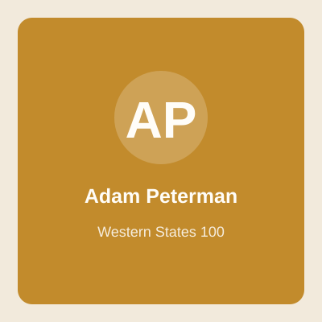
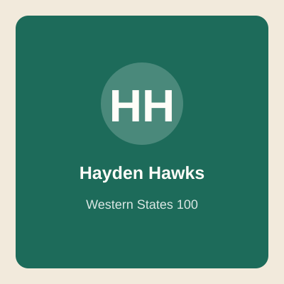
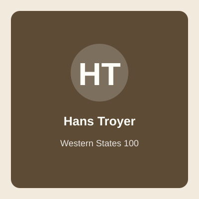
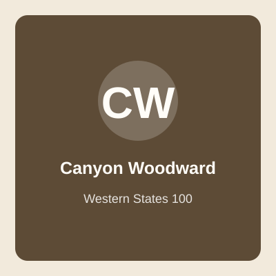
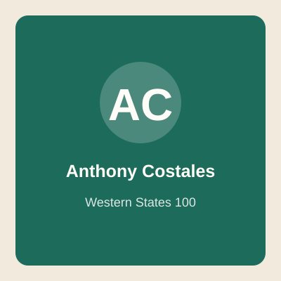
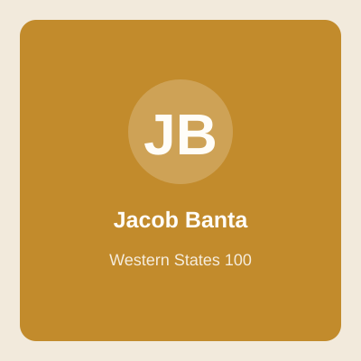
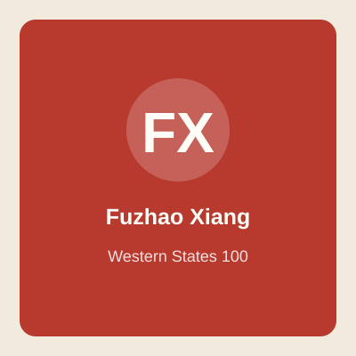
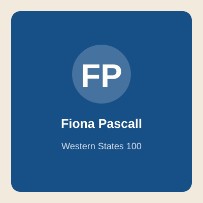
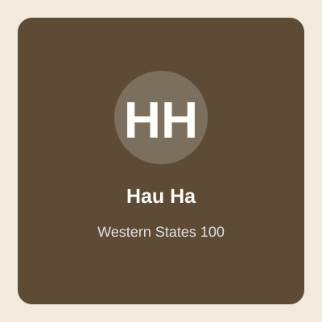
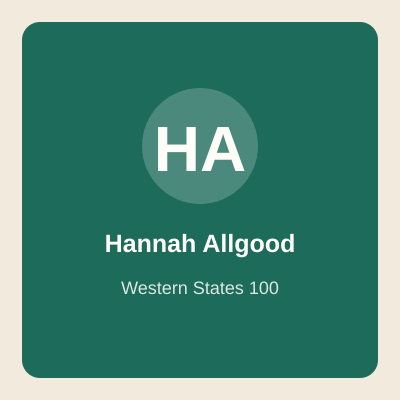
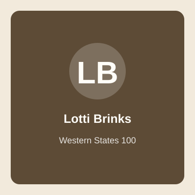
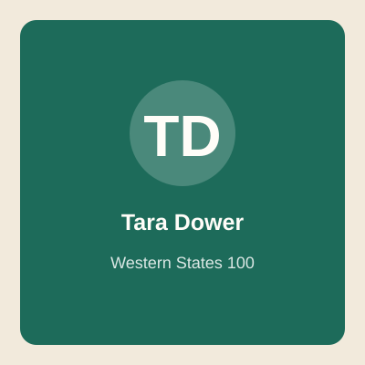
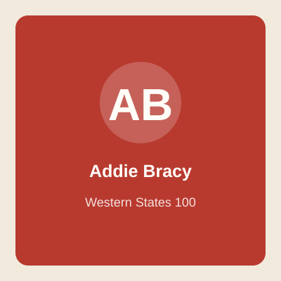
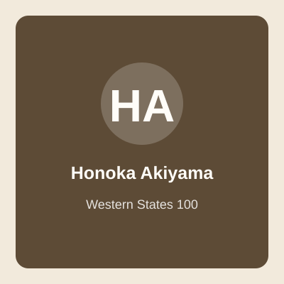
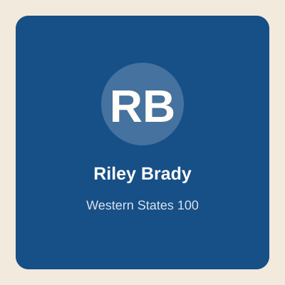
男子 · Top Ten · Bib M3
山地越野的全球标尺人物：UTMB、Hardrock、Zegama、Skyrunning、滑雪登山和高山速攀都有代表作。2010 年“Unbreakable”第三，2011 年赢下 Western States；2025 年回归仍拿第三。
极强的山地效率和能量管理，擅长把技术下坡、长爬升和补给节奏合成一条线。Western States 对他最大考题不是会不会爬山，而是能否在可跑性极强的后半程和热环境里保持路跑式输出。
2025 Chianti 有公开报道提到 TFL 疼痛；赛前需观察早段步态和下坡是否保守。
少说狠话，多用行动解释“与山合作”。他不是传统意义只盯配速的选手，更像把路线当一座需要解题的山。
中文解说可说：他来不是给履历加星号，而是来测试“史上最强山地大脑”还能不能在美国最会跑的 100 英里赛道上赢。
我看到 Kilian Jornet，第一句话不会先说他有多少冠军，而是说：这是一位曾经定义山地越野的人，今天又回到一条正在重新定义速度的赛道。2011 年他赢过这里，2025 年他第三，但 2025 的第三已经比当年夺冠快了一个多小时，这说明不是他慢了，是 Western States 这项运动本身变快了。
他的比赛关键不在于会不会爬山，而在于能不能把山地大脑切换成加州 100 英里的跑动模式。前半程如果他看起来不急，我不会说他保守；我会说这是 Kilian 在等赛道开始收账。
如果镜头里他开始频繁用冰、补水、进站动作非常干净，那就是危险信号：这种选手一旦把热管理做顺，后半程不是追人，是把比赛重新排序。
男子 · Sponsor · Bib 46
Western States 男子现代速度革命的代表：多次冠军，2019 年 14:09:28 仍是男子纪录；2023 年成为首位赢 UTMB 的美国男子，2025 Chianti 120K 状态强势。
前半程可以像公路赛一样给压力，后半程下坡和碎石路还能继续推进。若天气温和、无雪，他的“高速巡航”会让全场被迫跟着做选择题。
近年曾有 UTMB 失利和状态波动，但 2025 Chianti 夺冠显示竞技状态已回到顶层。
主动出击，不等别人犯错；把 Western States 当成速度实验室。
看点：当纪录保持者不用破纪录也能赢时，他会选择控场，还是一上来把比赛变成计时赛？
我讲 Jim Walmsley，一定会把 2016 年那次跑错路放在前面。不是为了消费失误，而是因为没有那一幕，就很难理解后来的 Jim 为什么每一次回到 Western States 都像在跟赛道谈判。
他现在的问题不是能不能跑快，这个答案早就写在 14:09:28 里。真正的问题是，当一群年轻人也敢把比赛推进 14 小时区间，他还会不会亲自下场把节奏拉到纪录线附近。
如果 Jim 早早领跑，比赛会变成计时赛；如果他在第二集团安静待着，那也不代表他没牌，可能只是把最后的攻击留给 Foresthill 之后。
男子 · Golden Ticket · Bib 38
2022 年完成 Canyons 100K、Western States、世锦赛长距离“三连击”式爆发；2024 伤后回归，CCC 登台；2026 通过 Canyons 100K Golden Ticket 回到起点。
爬升能力、节奏感和大赛冷静度都强。关键是伤后能否承受 100 英里后 60 公里的高速下坡肌肉冲击。
公开资料显示 2023 年遭遇骶骨应力性骨折并长期恢复；这是他本届最大的背景故事。
耐心重建，不靠一场比赛证明全部；但一旦健康，他是最会把“稳”变成“快”的人之一。
解说关键词：归来。不是新人冒险，而是冠军把身体重新拼好后再回老考场。
我会把 Adam Peterman 叫作“回到老考场的冠军”。2022 年他第一次跑 Western States 就赢了，这种履历太漂亮，漂亮到后来任何伤病和低谷都会被放大。
今天看他，不只看名次，更要看动作是不是放松、下坡是不是敢放、进站是不是果断。因为 Adam 的上限我们见过，问题只是这具身体现在能不能重新承载那个上限。
如果他前半程不被 Kilian、Jim 这些名字带乱，到了峡谷和 Foresthill 之后还在前排，我会非常认真地看他：冠军的记忆有时候会在后半程突然醒过来。
男子 · Golden Ticket · Bib 14
意大利国际级山地跑和越野跑高手，2025 CCC 冠军级表现；从短中距离山地速度延伸到长距离，本届是 100 英里首秀。
技术、爬坡、节奏变化强；疑问是夜间、补给、热和最后 30 英里的肌肉耐受。
未见赛前重大近期伤病公开信息。
欧洲山地跑的精密发动机：效率、轻盈、少浪费。
一句话：他如果 70 英里后还在第一集团，所有“100 英里经验论”都会开始紧张。
我看 Francesco Puppi，会把他当成这场比赛里的翻译题：一个欧洲山地速度高手，能不能把自己的语言翻译成 Western States 的语言。
他前半程如果显得轻松，那不稀奇；真正要看的是 Foresthill 之后，那些看似好跑、其实最会掏空股四头肌的路段，他还能不能保持效率。
这类选手最容易带来惊喜，因为观众可能低估他对节奏的理解。Western States 不只是美国人的主场，也是所有聪明跑者都想破解的一道题。
男子 · Golden Ticket · Bib 34
2024 UTMB 冠军，且曾以鞋类工程师身份爆冷震动越野圈；2025 Chianti 获得通往 Western States 的资格。
长距离耐心极好，擅长不被声量影响，后程仍能推进。Western States 对他的考题是更快、更热、更可跑。
2025 Chianti 有公开报道提到肠胃问题；100 英里补给执行是观察点。
工程师式比赛：不浪费、不表演、把系统跑到最优。
他是“别看我低调，我已经赢过 UTMB”的那种危险人物。
Vincent Bouillard 是那种不能用声音大小判断危险程度的选手。他赢过 UTMB，而且不是靠流量赢，是靠一天一夜的执行力赢。
我会特别看他的补给和胃肠管理。Chianti 已经提醒过我们，他的能力没有问题，但 Western States 的热和可跑性会让胃肠承受另一种压力。
如果他前半程像隐身一样待在前十附近，我反而会提高警惕。低调选手最可怕的时刻，往往是大家突然发现他已经离终点很近。
男子 · Golden Ticket · Bib 40
美国越野跑高速度选手，Black Canyon、JFK、CCC 等赛事有顶尖表现；Western States 多次经验让他熟悉这里的热、峡谷和节奏。
可跑路段强，适合今年无雪和温和天气；若补给顺、不过早烧腿，是领奖台变量。
职业生涯有过伤病起伏，但赛前无明确重大伤病公开信息。
敢跑、敢压强度，但成熟版本的 Hawks 需要把锋芒留到 Foresthill 之后。
看点：他不是没速度，而是今年能不能把速度存到最后 20 英里。
我讲 Hayden Hawks，会先提醒观众：这个人不是缺速度，他缺的从来不是速度。Western States 对他最狠的地方，是要求他把速度存起来，存到别人开始没得用的时候。
如果他前半程非常克制，我会认为这是好消息。Hayden 真正可怕的版本，不是早早把镜头抢走，而是到了 Foresthill 之后还可以把路跑能力拿出来。
他的比赛很适合用一个词看：预算。每一次下坡、每一次追击、每一次进站，都是在花预算。花得漂亮，他就是领奖台候选；花得太早，赛道会开罚单。
男子 · Top Ten · Bib M5
新西兰顶尖越野跑者，2024/2025 Western States 均进入前列，2025 官方媒体稿点名为回归强者。
下坡和长时间稳定输出是强项；熟悉赛道后，第三次/第四次经验会让他少交学费。
未见赛前重大近期伤病公开信息。
低调高效型，少镜头但不掉线；越到后面越难甩。
他像比赛里的“静音模式”：不吵，但你一看榜单，他还在。
Daniel Jones 是我会反复提醒观众不要漏看的人。不是所有强者都用领跑来证明自己，有些人用不掉线来证明。
他如果在前半程第五、第六、第七附近，看起来不抢镜，我会觉得那正是他的舒适区。Western States 的后半程会自动惩罚前面犯错的人，稳定本身就是一种进攻。
到过河之后，如果 Daniel 还在可见范围内，我会把他列入真正的威胁名单。因为这条赛道最后奖励的，往往是那些一直没有做蠢事的人。
男子 · Top Ten · Bib M4
2025 Western States 第四名，从 Missoula 跑者群体中杀出；官方媒体稿将其列为男子竞争核心之一。
已经证明能处理 Western States 全流程。第二次参赛的优势在于知道哪里要忍、哪里该吃、哪里可以真正开火。
未见赛前重大近期伤病公开信息。
务实、耐心、后程执行力强。
他不是最大牌，但 2025 已经给所有大牌递过名片。
Jeff Mogavero 是那种最容易被普通观众低估、也最容易让专家紧张的选手。因为他没有最大声的履历，但他有 Western States 第四名。
我会观察他是不是继续采用 2025 那种稳扎稳打的方式。如果他不急着证明自己，反而说明他知道这条赛道怎么赢时间。
在强场里，第四名回归者有一个微妙优势：他已经知道自己属于这里。这个心理位置很重要，他不用把比赛跑成自我介绍。
男子 · Top Ten · Bib M7
多次 Western States 前十级别表现，稳定性和赛道理解是核心资产。
熟悉峡谷热、补给点节奏和后半程心理波动；如果前方互相消耗，他具备捡名次的能力。
未见赛前重大近期伤病公开信息。
把 100 英里拆成可执行的小任务，少犯错就是进攻。
这种选手适合提醒观众：Western States 不只奖励天才，也奖励会活到最后的人。
Ryan Montgomery 在这场比赛里不是陌生人。他知道 Western States 会在哪些地方让人兴奋，也知道哪些兴奋会在后面变成代价。
我讲他时，会把速度和身份都放在桌面上。顶尖竞技当然要看快慢，但 Ryan 的存在也让这条传统赛道有了更宽的叙事。
如果他过了 Foresthill 还在前十边缘，我不会说他只是守名次。对 Ryan 来说，那可能正是把比赛拖进自己节奏的开始。
男子 · Top Ten · Bib M8
年轻上升期选手，2025 已在 Western States 前十站稳，2026 继续以 Top Ten 身份回归。
年轻、有速度，关键是不要被前面传奇名字带到超预算配速。
未见赛前重大近期伤病公开信息。
上升期最可怕的是还不知道自己的天花板。
他如果前半程忍住，后半程可能让“老熟人们”很难受。
Hans Troyer 现在进入了一个很有意思的位置：去年他证明自己能跑进前十，今年他要证明那不是一次性事件。
我会看他前半程有没有年轻选手常见的兴奋感。如果他忍得住，后面会非常有戏；如果他太早回应每一次加速，Western States 会把这份热情收得很贵。
年轻选手在 100 英里里最漂亮的成熟，不是跑得更凶，而是知道什么时候让比赛先自己乱起来。
男子 · Top Ten · Bib M10
日本选手，2025 Western States 前十，代表亚洲男子在顶级 100 英里赛场的硬实力。
纪律性、补给执行和节奏稳定值得期待；西部炎热环境和高速后半程仍是关键。
未见赛前重大近期伤病公开信息。
东方耐心遇上美国高速赛道。
中文解说可以把他作为亚洲观众的自然关注点：低调但非常能磨。
Hiroki Kai 我会用“低调但能磨”来讲。Western States 不一定奖励最会制造新闻的人，但一定奖励最会把动作重复到最后的人。
对他来说，关键不是能不能被镜头追到，而是能不能在每个计时点都少掉一点风险。亚洲选手在这种强场里跑进前十，本身已经说明硬度。
如果比赛后半程开始大洗牌，我会特别留意 Hiroki。因为越是混乱，越能体现一个选手有没有自己的节奏。
男子 · Golden Ticket · Bib 39
以硬派进攻闻名，CCC、North Face 50 等经典战绩让他成为越野跑最有辨识度的攻击型选手之一。
如果比赛需要有人打破和平，他永远是候选人；风险是 Western States 后程会惩罚过早透支。
职业生涯有过伤病和恢复期；赛前需看是否能把攻击性和耐心平衡。
不爱温吞，喜欢把比赛跑成故事。
他在场，比赛通常不会无聊。
Zach Miller 在名单里，我会立刻提醒观众：这个人可能不会按照教科书来。他的魅力就是进攻，他的风险也是进攻。
如果他早早出现在前面，我不会惊讶；我会问的是，这次进攻能不能带到最后。Western States 的后半程不怕你前面帅，它只认你最后还剩什么。
Zach 的每一次加速都值得讲，因为那不只是配速变化，那是比赛气质变化。有些选手等机会，有些选手制造机会，他属于后者。
男子 · Golden Ticket · Bib 16
美国新生代长距离越野选手，Golden Ticket 晋级，具备在强场中突围的速度。
需要把资格赛速度转换成 100 英里耐心；若天气温和，首秀黑马价值更高。
未见赛前重大近期伤病公开信息。
敢在强手场里抢票，本身说明心理硬度。
观众不熟，但前十预测里不能漏掉这种“刚抢到门票的人”。
Jeshurun Small 我会当成黑马来播，但不是随便喊黑马。Golden Ticket 的含金量在于近期状态是真实的，他不是靠履历站在这里。
我会看他前 50 英里有没有过度证明自己。第一次面对 Western States 的强场，最难的是承认自己不需要每一次都回应。
如果他到了 Foresthill 还在前十附近，我会开始认真讲他的名字。因为那时候就不是“可能有潜力”，而是已经在用比赛说话。
男子 · Golden Ticket · Bib 19
2025 Javelina Jundred 男子赛道纪录级表现，凭高速 100 英里能力拿到 Golden Ticket。
从沙漠高速 100 英里来到 Sierra 峡谷，优势是能跑，考题是爬升、下坡肌肉和技术变化。
未见赛前重大近期伤病公开信息。
高速型 100 英里选手，最怕被低估。
如果今年真是快天，他的 Javelina 背景会变得很有用。
Will Murray 的看点很清楚：一个高速 100 英里选手，来到一条同样可跑、但更会折磨身体的赛道。
如果今年比赛节奏很快，我会把他的名字往前提。因为这种选手不怕跑起来，怕的是热、爬升、下坡损伤把跑姿拆掉。
他最理想的剧本不是前半程抢镜，而是让大家在后半程突然意识到：这条路开始像他熟悉的高速百英里了。
男子 · Golden Ticket · Bib 20
美国 Appalachian/东南山地背景跑者，Golden Ticket 晋级，名字和项目气质很搭。
擅长崎岖山地和耐心推进；Western States 的高速度平路/缓下坡会检验转换能力。
未见赛前重大近期伤病公开信息。
社区、山地、韧性型选手。
名字叫 Canyon，结果要跑进真正的 canyons，这个梗可以留到 Devil’s Thumb。
Canyon Woodward 这个名字放在 Western States 里，解说员很难忍住不讲峡谷。可玩笑之外，他真正要回答的是：东部山地经验能不能转换成加州峡谷效率。
我会看他在几个大爬升之后的反应。Golden Ticket 说明他有状态，但 Western States 会把状态拆成很多小账单。
如果他在中后段还没有明显掉速，这个名字就会从有趣变成危险。百英里里，很多黑马都是这样一点点从字幕边缘跑到画面中央。
男子 · Golden Ticket · Bib 24
美国强力越野/公路混合型长距离跑者，有 Western States 经验，也有 Golden Ticket 证明近期状态。
经验和速度兼具，适合在第二集团稳住，等待前方爆点。
未见赛前重大近期伤病公开信息。
不必每次都抢镜，但可以一直在危险位置。
这类选手最适合在直播中提醒：别只看第一集团。
Anthony Costales 我会从“可跑性”讲起。Western States 后半程不像某些技术山地赛那样只能活下来，它还要求你能继续跑。
如果他前面没有被拉爆，后面路跑能力会越来越值钱。很多观众会盯着爬坡强的人，但这条赛道最后也会奖励会跑平路和缓下坡的人。
他的镜头可能不多，所以计时点更重要。只要他一直贴着前十，我会把他当作后半程可能收人的选手。
男子 · Golden Ticket · Bib 26
Golden Ticket 选手，代表美国新一批速度型 trail/ultra 竞争者。
首战最大变量是补给和情绪管理；不被大场面带飞，才有进前十空间。
未见赛前重大近期伤病公开信息。
先把门票抢到，再把名字跑进大众视野。
黑马型介绍：今天也许是很多观众第一次记住这个名字。
Jordan Bramblett 我会用“今天可能被记住的名字”来讲。Western States 每年都会有这种选手，开赛前不是最大标题，比赛后大家开始补资料。
我不会在前半程过早给他下结论。对 Golden Ticket 新面孔来说，前 30 英里看不出全部，真正的简历要到峡谷和 Foresthill 后才开始写。
如果他能把自己留在前十附近，那就是非常有价值的信号：他不只是拿到了门票，他已经开始适应这个房间。
男子 · Golden Ticket · Bib 29
Golden Ticket 晋级，湾区/加州训练环境对赛道气候和地形适应有帮助。
本地化适应是优势；关键是能否在国际强场中守住节奏。
未见赛前重大近期伤病公开信息。
把熟悉地形转化为比赛执行。
他不是最响的名字，但可能是最熟悉加州味道的人之一。
Jacob Banta 我会从“熟悉加州味道”讲起。Western States 的热不是抽象的热，路面的尘、峡谷的反烤、补给站之间的节奏，都需要身体知道答案。
如果他前半程不抢镜，我不会担心。对这类选手来说，最好的剧本是让外来大牌先处理陌生变量，自己把熟悉感一点点变成名次。
到了后半程，如果他还在榜单上稳稳向前，那就是本地适配开始兑现。
男子 · Golden Ticket · Bib 33
法国高水平越野跑者，欧洲技术山地背景强，Golden Ticket 进入 Western States。
欧洲选手常见优势是技术和爬升，Western States 则要求“下坡后还能跑马拉松”。
未见赛前重大近期伤病公开信息。
技术流进入速度场。
他能不能把阿尔卑斯逻辑翻译成加州峡谷语言，是看点。
Thomas Cardin 我会当成“翻译能力”来播。欧洲山地选手来到 Western States，不是能力够不够的问题，而是能力怎么换算的问题。
他在技术路和爬升上不会怯场，但这条赛道后半程要求的是持续跑动和热管理。很多欧洲强者都会在这里发现，美国百英里不是简单版山地赛。
如果 Thomas 在 Foresthill 后还能保持跑动效率，我会立刻提高他的前十权重。那说明他已经把两套语言接上了。
男子 · Golden Ticket · Bib 30
23 岁的新西兰年轻 Golden Ticket 选手，是男子精英组最年轻的高潜力面孔之一。
年轻意味着恢复和无畏，也意味着 100 英里经验可能不足；配速纪律决定上限。
未见赛前重大近期伤病公开信息。
年轻人的比赛哲学常常很简单：不知道怕，所以敢。
如果他前半程太兴奋，可以幽默提醒：Western States 专治“我感觉特别好”。
Maximillian Yanzick 我会用“年轻高潜力”来讲，但我不会把年轻自动翻译成鲁莽。真正厉害的年轻选手，是有速度也有刹车。
如果他前半程看起来太兴奋，我会提醒观众：Western States 专门测试这种兴奋能不能活到 70 英里以后。
他最好的比赛不是一开始惊艳，而是到了后半程大家发现，这个年轻人还没有交学费。那时候他的名字就会变得很有分量。
女子 · Top Ten · Bib F1
2025 Western States 冠军，16:37 为女子历史第四快；Flagstaff 训练背景，近年从国际大赛到 100 英里持续成熟。
去年证明她能在热、峡谷和后程压力里做正确选择。今年身份从追逐者变成卫冕者，战术上可能更有耐心。
赛前未见重大近期伤病公开信息；2025 Chianti 曾有肠胃/停顿影响报道。
强而不躁，擅长把“今天身体给我的东西”最大化。
她不是来讲童话的卫冕冠军，她是带着上一年答案卷回考场的人。
Abby Hall 今年不是来讲励志故事的，她是带着答案卷回来的卫冕冠军。16:37 的成绩已经说明，她不只是赢了，她跑进了女子历史非常快的区间。
我会看她是不是愿意让比赛先乱。卫冕冠军最难的是不被身份催着领跑，因为所有人都在用她当参照物。
如果 Abby 在中段还保持表情和进站动作都很稳，我会认为她仍然是冠军讨论的中心。F1 号码布不是装饰，是所有人盯着的靶心。
女子 · Top Ten · Bib F2
中国越野跑代表人物，2024 跑出女子历史第三快级别成绩，2025 再获第二并进入历史前列。
非常擅长稳定推进和后程追击；热适应、补给熟悉度和在 Auburn 的赛前适应是她的武器。
CTS 赛后文提到她重视防伤训练、力量和热适应；未见重大赛前伤病公开信息。
不靠夸张开局，而靠持续压迫。越到后面，她越像一支慢慢拧紧的螺丝。
中文解说核心人物：她离冠军不是“差一点运气”，而是已经连续两年把冠军逼到认真。
讲向付召，我会很直接：她不是来参与国际大赛的中国选手，她是来争冠军的选手。连续两年在 Western States 跑到女子最前排，这已经把她的定位说清楚了。
我会看她前半程是不是足够冷静。她已经知道这条赛道怎么惩罚人，所以今年更关键的是在正确的地方发力，而不是每个计时点都回应。
如果她到 Foresthill 还咬在冠军附近，中文直播的情绪会很自然地起来。那不是硬煽情，是因为我们真的在看一个中国选手冲击 Western States 冠军。
女子 · Top Ten · Bib F3
加拿大顶尖长距离越野跑者，UTMB/Western States 均有顶级成绩；2025 Western States 第三。
长距离经验丰富，不怕慢热；如果前两位互相盯防，她有能力用稳定后程接近。
过往公开资料曾提到较长恢复/伤病阶段；赛前需关注状态连续性。
成熟、耐心、抗波动。
她是那种你以为掉出镜头，结果终点又在领奖台的人。
Marianne Hogan 是我会一直放在雷达上的选手。她不一定每次都用最戏剧化的方式出现，但她太懂长距离了。
对她来说，比赛的重点不是早早抢到多少镜头，而是让自己一直拥有选择权。到了后半程，如果别人开始处理危机，她可能已经在悄悄收名次。
我会把她当作领奖台秩序的威胁者来讲。只要她没有明显掉出节奏，任何人想守住前面的位置都不能忽略她。
女子 · Top Ten · Bib F5
英国选手，2025 Western States 第五；官方媒体稿点名为女子前排回归者。
已完成一次赛道学习，第二年更知道何时忍热、何时吃、何时加速。
未见赛前重大近期伤病公开信息。
低调、执行、把错误率降到最低。
她不是标题最大的人，但前五经验在 Western States 很值钱。
Fiona Pascall 今年我会比普通观众更早提她。她有去年第五，也有 Chianti 的近期状态，这两个信息叠在一起，分量很足。
她的比赛关键是把欧洲/英国 trail 的能力放进 Western States 的热环境里。如果降温和补给做得顺，她完全有资格继续冲前五。
直播里如果她一直在前五到前八之间，我不会说她只是守住位置。对 Fiona 来说，那可能是把比赛拖到自己熟悉的耐心区。
女子 · Top Ten · Bib F6
越南选手，2025 Western States 前十，代表东南亚越野力量进入世界顶级 100 英里视野。
热环境适应可能是优势；关键是高速可跑段和后半程肌肉耐受。
未见赛前重大近期伤病公开信息。
稳扎稳打，少犯错就能继续向前。
亚洲观众可以特别关注：她让女子前十不再只是欧美叙事。
Hau Ha 我会作为亚洲女子的重要线索来讲。她已经在 Western States 跑进前排，所以我们不是在期待奇迹，而是在观察一次回归。
她如果前半程不被大牌节奏带乱，后半程会很有意思。热环境下，谁能持续吃、持续降温、持续跑，谁就有机会把名次守住甚至往前推。
这类选手最值得中文观众认识，因为她让大家看到亚洲越野不是单点故事，而是越来越多地区都能进入最高水平。
女子 · Top Ten · Bib F7
美国科罗拉多系耐力选手，2025 Western States 前十后回归。
高海拔训练背景有帮助；需要把爬坡能力转化为后程可跑速度。
未见赛前重大近期伤病公开信息。
稳定输出型，不一定华丽，但适合 100 英里。
她的价值在于：比赛乱起来时，稳定本身就是武器。
Hannah Allgood 我会用稳定来讲，但我不会把稳定讲得平淡。百英里里的稳定，是别人出问题时你还没有出问题。
她的目标很清晰：先守住前十，然后看前面谁付出代价。Western States 的女子前排很强，硬抢不一定划算，耐心反而可能更锋利。
如果她到后半程还在 F7 附近甚至往前，我会提醒观众：这就是前十回归者最真实的威胁。
女子 · Top Ten · Bib F8
国际越野强手，技术山地和长距离均衡，2025 Western States 前十。
欧洲山地训练让她技术强；若今年无雪且天气温和，速度要求更高。
未见赛前重大近期伤病公开信息。
灵活、技术、国际化比赛经验。
她像多语种选手：能读山，也要读加州热。
Caitlin Fielder 我会从“转换能力”讲起。她有技术山地背景，但 Western States 要求她在更长时间里保持可跑效率。
她如果在峡谷段处理得漂亮，后面就有机会守住甚至推进。因为技术选手一旦热管理不出问题，身体控制会在下坡里很有价值。
我会盯她的进站动作和下坡姿态。对 Caitlin 来说，流畅就是好消息；一旦开始刹车，说明这条赛道开始咬腿了。
女子 · Top Ten · Bib F10
津巴布韦选手，Western States 老熟人，2024/2025 都在女子前列，是赛事稳定性最强的国际面孔之一。
赛道经验极深，知道哪里会热、哪里会崩、哪里能追回来。
未见赛前重大近期伤病公开信息。
经验型耐力，不浪费每一分体力。
她跑 Western States 像本地人带路：不一定最吵，但非常知道路怎么走。
Emily Hawgood 是 Western States 的老熟人型强者。她不需要用前半程的镜头证明自己，因为她知道这条赛道真正开始说话是在后面。
我会把她放在“经验溢价”这一栏。当前面有人第一次处理峡谷、热和后半程跑动时，Emily 可能已经知道下一步该怎么做。
如果她到过河之后还在前十附近，我会非常认真地看她。经验选手到了最后 20 英里，往往能把别人的慌张变成自己的名次。
女子 · Golden Ticket · Bib 11
波兰强手，2025 CCC 冠军级表现，Golden Ticket 进入 Western States。
山地技术和强度都够，100 英里首秀则要看补给、热和夜间管理。
未见赛前重大近期伤病公开信息。
欧洲精英的强度感很足，关键是把锋利变成长久。
她若前半程不急，后半程会很危险。
Martyna Mlynarczyk 我会当作女子组的欧洲变量来讲。她不是来凑热闹的，Golden Ticket 和欧洲成绩都说明她有硬实力。
她最大的问题是 Western States 的节奏转换：这里没有那么多技术路给你喘息，很多地方就是要持续跑。
如果她能把前半程压住，后面会很有杀伤力。女子组前十很可能就在这种耐心型选手手里被重新排列。
女子 · Golden Ticket · Bib 13
Boise 选手，UTMB/CCC 体系中表现突出，已有 Western States 经验。
既有欧洲赛经历也有 WS 经验，适合在第二集团稳步推进。
未见赛前重大近期伤病公开信息。
把国际强度和美国 100 英里执行结合。
她不是新手，别把 Golden Ticket 误读成“刚入场”。
Lotti Brinks 我会提醒观众不要只看 Golden Ticket 标签。这个标签说明近期状态，但她不是第一次接触这种大场面。
她的优势在于知道自己要等什么。Western States 女子组很强，前半程强行抢位置未必划算，把身体留到后面才是更聪明的打法。
如果她进站干净、表情稳定、计时点不掉，我会把她看作后半程能捡到大名次的人。
女子 · Golden Ticket · Bib 17
2024 Appalachian Trail 总体 FKT，2025 Javelina Jundred 女子纪录级表现；从超长线路到百英里竞赛都能打。
耐受力惊人，心理韧性顶级；Western States 问题是她会更像 FKT 稳推，还是能在精英竞速里切换节奏。
公开经历包括早年 AT 尝试因恐慌发作退出，后来完成并刷新纪录；赛前未见重大身体伤病公开信息。
把恐惧变成路线，把路线变成行动。
她的故事天然有传播力：一个能把 2,189 英里跑成纪录的人，现在来跑 100 英里。
Tara Dower 是这场女子组里最会讲故事的人之一。Appalachian Trail FKT 让她的耐力标签非常夸张，但今天的问题是：超长线路能力能不能变成百英里竞速能力。
Javelina 已经给了一个很强的答案，她不只是能熬，也能快。Western States 会继续追问：能不能在热、爬升、下坡损伤里快。
如果她前半程很兴奋，我会稍微担心；如果她稳稳待在前排后面，我反而会觉得危险。一个跑过 2,000 多英里纪录的人，最不怕的就是时间慢慢变长。
女子 · Golden Ticket · Bib 18
美国山地越野和心理表现领域的代表人物，兼具职业跑者、教练和运动心理背景。
比赛阅读能力强，知道如何处理低谷；若高温不极端，她的经验会更值钱。
未见赛前重大近期伤病公开信息。
心理韧性不是口号，而是可以训练的技术。
适合讲给普通跑者听：她证明“脑子会跑”也是硬实力。
Addie Bracy 我会从心理表现讲起。百英里到了后半程，很多问题表面是腿，实际上是判断、情绪和注意力。
她的优势不一定体现在某一个爆炸性计时点，而可能体现在坏时刻没有继续变坏。普通观众看到的是配速，跑者会懂那背后是心理管理。
如果她比赛中段遇到波动，我不会立刻判死。对这种选手来说，重新组织自己本身就是能力的一部分。
女子 · Golden Ticket · Bib 21
Missoula 跑者，Golden Ticket 晋级，速度和爬升能力兼具。
首战 100 英里最怕过早把兴奋变成乳酸；如果她能稳住，前十空间很大。
未见赛前重大近期伤病公开信息。
新锐的优势是没有包袱。
她来自一个不断生产强者的训练环境，名字可能很快被更多人记住。
Jennifer Lichter 我会从 Missoula 讲起。训练环境有时候不是背景板，它会塑造一个选手处理山地、寒热和长距离的方式。
她现在的问题是把资格赛状态搬到 Western States。强场里新名字最难的是不被大场面推着跑，而是继续做自己已经会做的事。
如果她到了后半程还在前十边缘，我会把她当作女子组的真正变量，而不是“新名字表现不错”这么简单。
女子 · Golden Ticket · Bib 23
东京奥运会马拉松铜牌，2:23 级别马拉松实力；2026 Black Canyon 100K 首个长距离 trail 目标即拿到 Golden Ticket。
最大优势是路跑经济性和耐力底盘；最大问号是 100 英里夜间、补给、技术下坡和肌肉损伤。
公开资料显示曾有髋部问题、髌骨骨折/髌腱部分撕裂，并公开谈过心理健康和饮食障碍议题；近年转向更健康的长距离训练。
从“更快”转向“更长、更健康、更可持续”。
中文观众会秒懂：奥运马拉松奖牌选手来跑西部 100，这不是跨界，这是开盲盒。
Molly Seidel 是我会重点解释的跨界选手。她不是普通路跑选手，她是奥运马拉松铜牌；但 Western States 也不是普通长跑，它会把马拉松能力放到热、坡、补给和一整天的损耗里重新考试。
她最大的看点是速度储备怎么花。路跑速度让她在可跑路段很有优势，但百英里不会因为你马拉松快就自动让路。
如果 Molly 前半程非常冷静，我会觉得这是好信号。她不需要证明自己会跑快，全世界早就知道；今天她要证明的是，自己能不能跑得足够久、足够聪明。
女子 · Golden Ticket · Bib 27
日本 Golden Ticket 选手，代表亚洲女子新力量进入 Western States 精英竞争。
日本选手常见优势是纪律和执行；首战关键是热、补给和后程下坡。
未见赛前重大近期伤病公开信息。
稳、准、耐心。
她是亚洲女子阵容里很值得追踪的隐藏线。
Honoka Akiyama 我会作为亚洲女子新力量来讲。她不是只带着国籍标签来到这里，而是带着 Golden Ticket 来的。
我会看她前半程是不是按自己的节奏跑。Western States 强场里最容易犯错的就是被别人的名气带走，尤其是第一次面对这条赛道。
如果她在中后段还稳，我会把她的价值往上调。亚洲选手在女子前十附近多一个名字，对中文观众来说非常值得关注。
女子 · Golden Ticket · Bib 28
澳大利亚 Golden Ticket 选手，具备热环境和长距离山地经验。
澳洲训练背景可能帮助适应热；Western States 的峡谷节奏仍需要精确控温。
未见赛前重大近期伤病公开信息。
耐热、强韧、少废话。
如果当天变热，别忘了澳洲选手可能会偷笑。
Holly Ranson 我会从热适应讲起。Western States 如果温度上来，比赛会从跑步比赛慢慢变成散热比赛。
澳大利亚背景不能自动等于抗热无敌，但它至少让这个变量值得被认真讨论。她如果补给和降温做得稳，前十机会会增加。
我会在峡谷段特别看她。如果别人开始明显降速，而 Holly 还保持动作干净，那就是她的比赛窗口打开了。
女子 · Golden Ticket · Bib 31
挪威山地强手，滑雪/山地耐力背景深厚，有 Western States 经验。
爬坡和技术强，但热适应永远是北欧选手在 WS 的显性考题。
未见赛前重大近期伤病公开信息。
北欧耐力机器，冷静得像天气预报。
她的比赛看点：能不能把寒冷山地的发动机调到加州热风档。
Yngvild Kaspersen 我会用“发动机换环境”来讲。她的山地耐力底子很强，但 Western States 会把环境变量拉满。
如果天气不算极热，她的能力会更容易发挥；如果很热，她就必须把降温和补给做得非常主动。
我会看她是不是能在前半程保存腿。北欧山地能力很硬，但这条赛道后面那些能跑的下坡，会用另一种方式考验她。
女子 · Golden Ticket · Bib 32
美国经验型长距离选手，UTMB 体系有前列表现，43 岁仍保持顶级竞争力。
成熟、稳、补给和心理波动处理能力强；年龄不是劣势，可能是风险管理能力。
未见赛前重大近期伤病公开信息。
长距离从来不是只奖励年轻，它奖励会判断的人。
她是给大众跑者的好故事：耐力运动的黄金年龄可以很长。
Lauren Puretz 我会从年龄和经验讲起，但不会把它讲成温情故事。43 岁还在 Western States 精英讨论里，说明她的能力仍然很硬。
她的机会来自耐心。女子组如果前半程打得太凶，经验型选手会在后面看到空间。
如果 Lauren 一直在前十边缘不掉，我会提醒观众：这不是偶然吊着，这是经验选手最熟悉的位置。
女子 · Golden Ticket · Bib 35
美国顶尖非二元/女子组精英选手之一，已有 Western States 经验，Golden Ticket 回归。
节奏稳定、抗压强；熟悉赛道后更有机会把名次向前推。
未见赛前重大近期伤病公开信息。
用表现拓宽越野跑的叙事边界。
TA 的存在让比赛不只关于速度，也关于谁能站上这条历史赛道。
Riley Brady 我会认真讲，不会只把 TA 当成一个社会话题。TA 是有 Western States 经验、也有竞争能力的选手。
当然，Riley 的存在也让这场比赛的叙事更宽。越野跑最迷人的地方之一，就是很多不同身份的人都可以在同一条赛道上用表现说话。
如果 TA 在后半程仍然贴着前十，我会把重点拉回竞技：经验、耐心、补给和下坡能力，这些才是最后决定名次的东西。
女子 · Golden Ticket · Bib 36
年轻 Golden Ticket 选手，Salt Lake City 山地训练背景，潜力线明显。
年轻、速度够，100 英里首秀需要克制；如果前半程不过火，后程可能成为惊喜。
未见赛前重大近期伤病公开信息。
先大胆进入，再学会耐心。
她适合被称为“未来感选手”：今天也许不是天花板，只是开头。
Sarah Humble 我会用“未来感”来讲。年轻、状态好、Golden Ticket 进来，这些都很吸引人，但 Western States 不会因为潜力给折扣。
她最需要的是耐心。前半程感觉好很正常，真正难的是感觉好但不乱花。
如果她到了后半程还在前十附近，那就不是潜力介绍了，而是现场升级。今天可能只是她 Western States 故事的第一章。